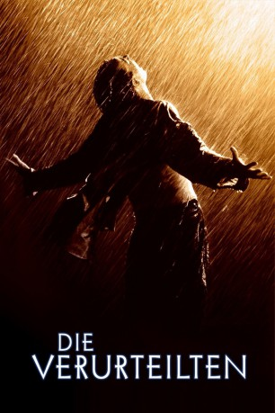

#942 Die Verurteilten
Alternativ: The Shawshank Redemption
Auszeichnungen: für 7 Oscars nominiert
 
 IMDB-Wertung: 9.3 / 10
IMDB-Wertung: 9.3 / 10  IMDB-TOP-Platzierung: 1
IMDB-TOP-Platzierung: 1  Metascore: 80
Metascore: 80 
Das Shawshank Gefängnis in den 30ern: der wegen Mordes an seiner Frau verurteilte Andy Dufresne kommt als Neuling lebenslänglich hinter Gittern. Zurückhaltend wie er ist, ist er ständig das Ziel sexueller Angriffe, doch als er als Banker durchblicken läßt, daß er finanziell für den Direktor und die Wärter eine Menge tun kann, ist für seine Sicherheit gesorgt. Langsam aber sicher freundet er sich mit dem Langzeitinsassen Red an, baut die Gefängnisbibliothek auf und rückt nie von seiner Überzeugung ab, unschuldig zu sein. Viele Jahre vergehen, bis etwas geschieht, was sogar Reds Leben für immer verändern wird...
Jahr: 1994
Dauer: 142 Minuten
FSK: 12
Land: USA Studio: Columbia PicturesTonspuren: DTS - ,
Untertitel:
Auflösung: 1080p (1920x1080) Größe: 13107 MB
Genre: Drama
Regisseur:  Frank Darabont
Frank Darabont
Drehbuch: Stephen King, Frank Darabont
Soundtrack: Thomas Newman
Darsteller:
 Tim Robbins als Andy Dufresne
Tim Robbins als Andy Dufresne Morgan Freeman als Ellis Boyd 'Red' Redding
Morgan Freeman als Ellis Boyd 'Red' Redding Bob Gunton als Warden Norton
Bob Gunton als Warden Norton William Sadler als Heywood
William Sadler als Heywood Clancy Brown als Captain Hadley
Clancy Brown als Captain Hadley Gil Bellows als Tommy
Gil Bellows als Tommy Mark Rolston als Bogs Diamond
Mark Rolston als Bogs Diamond James Whitmore als Brooks Hatlen
James Whitmore als Brooks Hatlen Jeffrey DeMunn als 1946 D.A.
Jeffrey DeMunn als 1946 D.A. Larry Brandenburg als Skeet
Larry Brandenburg als Skeet Neil Giuntoli als Jigger
Neil Giuntoli als Jigger Brian Libby als Floyd
Brian Libby als Floyd David Proval als Snooze
David Proval als Snooze Joseph Ragno als Ernie
Joseph Ragno als Ernie Jude Ciccolella als Guard Mert
Jude Ciccolella als Guard Mert Paul McCrane als Guard Trout
Paul McCrane als Guard Trout- Alfonso Freeman als Fresh Fish Con
 V.J. Foster als Hungry Fish Con
V.J. Foster als Hungry Fish Con Frank Medrano als Fat Ass
Frank Medrano als Fat Ass- Mack Miles als Tyrell
 Ned Bellamy als Guard Youngblood
Ned Bellamy als Guard Youngblood Brian Delate als Guard Dekins
Brian Delate als Guard Dekins Don McManus als Guard Wiley
Don McManus als Guard Wiley- Dorothy Silver als 1954 Landlady
- Dion Anderson als Head Bull Haig
- James Kisicki als Bank Manager
- Neil Riddaway als Con , uncredited
- Rita Hayworth als Gilda Mundson Farrell , archive footage, uncredited
- Alonzo F. Jones als Inmate , uncredited
 Gary Jones als Convict , uncredited
Gary Jones als Convict , uncredited Sergio Kato als Inmate II , uncredited
Sergio Kato als Inmate II , uncredited- Michael Lightsey als Con , uncredited
- Brad Spencer als 1957 Parole Hearings Guard , uncredited
- Renee Blaine als Andy Dufresne's Wife
- Scott Mann als Glenn Quentin
- John Horton als 1946 Judge
- Gordon Greene als 1947 Parole Hearings Man
- John E. Summers als New Fish Guard
- Alan R. Kessler als Laundry Bob
- Morgan Lund als Laundry Truck Driver
- Cornell Wallace als Laundry Leonard
- Gary Lee Davis als Rooster
- Neil Summers als Pete
- Joe Pecoraro als Projectionist
- Harold E. Cope Jr. als Hole Guard
- Donald Zinn als Moresby Batter
- Robert Haley als 1954 Food-Way Manager
 Dana Snyder als 1954 Food-Way Woman
Dana Snyder als 1954 Food-Way Woman- John D. Craig als 1957 Parole Hearings Man
- Ken Magee als Ned Grimes
Datei: X:\Person\Stephen King\Verurteilten, Die (1994, FSK12, 1920x1080).mkv seit 24.04.2015
Festplatte: HD Collection-7+mehr(A-Z)+Person
 Es gibt insgesamt 44 Filme in der Gruppe 'Person\Stephen King'
Es gibt insgesamt 44 Filme in der Gruppe 'Person\Stephen King'